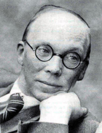

Die deutsche Version dieser Homepage finden Sie unter fhab.de Die deutsche Version dieser Homepage finden Sie unter fhab.de |
| |
|
Valentin Tomberg

Download (PDF, 111 kB)Born on the 26th of February, 1900 in St. Petersburg, Valentin Tomberg made contact at an early age with idealistic communities engaged in Rosicrucian, Martinistic and Hermetic teachings.
After the 1917 Bolshevistic Revolution in which he lost both his parents and brother, he moved to Estonia in 1920 to study comparative religion and philology. Among other things, he earned his living by working as a farmhand, teacher, artist, pharmacist and post office clerk.
In 1917 he joined the Theosophical Society. Shortly thereafter he resigned because the inflexible teachings, with a disregard for the “demands of reason”, did not appeal to him. He then turned his attention to the fundamental works of Rudolf Steiner. From 1920 he connected himself with the active anthroposophical striving.
As we can gather from a letter (1920) it was his inmost desire to become a pupil of Rudolf Steiner (see; Seiß, W., Untersuchungen zu Rudolf Steiners Schulungswerk sowie den Erkenntnisquellen Valentin Tombergs [1]. Schönach 2001; p 7). In a letter of 1924 (ibid, p. 12) he asks to be admitted to the 1st class of the School of Spiritual Science. These letters were never answered. It has not been determined whether they ever reached Rudolf Steiner, for whom they were intended.
From 1930 he writes more than 30 essays for the anthroposophical journals; „Anthroposophie – Wochenschrift für Freies Geistesleben [2].“ (1930, 1931), „Das Goetheanum – Internationale Wochenschrift für Anthroposophie und Dreigliederung [3]“ (1930), „Anthroposophie – Monatsschrift für Freies Geistesleben [4]“ (1931), "Korrespondenz der Anthroposophischen Arbeitsgemeinschaften [5]“ (1935), Anthroposophische Arbeitsberichte [6] (1938), edited by Dr. Kurt Piper, Emil Leinhas, Dr. Hans Buchenbacher, C. S. Picht, Dr. Hans Erhard Lauer and Albert Steffen. (The essays are gathered in the volume: Tomberg, V., Aufsätze 1930-1938 [7] , Schönach, 3. Edition 2002). In these essays a momentous spectrum of spiritual scientific themes are unfolded: The Gospel of St. John, The Spirituality of Russia and the east, Anti-Christianity, Etheric vision, The metamorphosis of thinking, The Finnish people, The Chinese people, The Mongol people etc.
25th September 1932 he is elected General Secretary of the Estonian Anthroposophical Society. In the three monthly summer course he gives 12 lectures on Rudolf Steiners book “How does one attain knowledge of the higher worlds?” Notes on these lectures are unfortunately not available. The autumn of this year he marries the divorcee Maria Belotsvetov. Together with her he had already previously been engaged in a common anthroposophical work.
----------------------------------------------
[1] Examinations of the works on spiritual schooling of Rudolf Steiner as well as the sources
of cognition of Valentin Tomberg
[2] Anthroposophy; weekly journal for a free spiritual life
[3] The Goetheanum – international weekly journal for anthroposophy and threefolding
[4] Anthroposophy; monthly journal for a free spiritual life
[5] Correspondence of anthroposophical working communities
[6] Anthroposophical working reports
[7] Essays 1930-1938
In a letter of September1932 (see: Seiß, W. Der Kampf gegen Valentin Tomberg, Teil B, Briefwechsel [8], Schönach 1999; P. A 19.1) he asks of Marie Steiner to grant his wife Maria and himself a year’s stay in Dornach. He wanted to study at the archives there in order, under consideration of the contributions of Rudolf Steiner to the theme, to be able to complete a work about the peoples of the east. He intended to earn his own livelihood by giving lectures. Marie Steiner, however, turned the request down on the grounds that in Dornach no lecturer was needed.
From 1931 Tomberg gives lectures in Tallin about the Old Testament. Because of their esoteric depth these lectures become the cause of traducements against Tomberg in Dornach as well as the starting point of an ongoing strife concerning him. Tragically these incidents determined the comprehensive marginalization of Tomberg which continues to this day within anthroposophic circles. The lectures were written down by Tomberg and from November 1933 they are sent in 12 consignments to subscribers every few months, the last consignment being sent in 1935. They were followed from 1936 by the 12 Considerations on the New Testament as well as 3 further considerations on the Apocalypse. 12 considerations on the Apocalypse had been intended, but Tomberg stalls the consignments. Records or notations for further studies on the Apocalypse have to this day not been found.
As the work in Estonia cannot be continued due to the antagonism from Dornach Tomberg in 1939 leaves for Holland where some friends offer to provide support for him.
He thankfully accepts this offer and during the following Christmas conference in Rotterdam he lectures on “The four sacrifices of Christ and the appearance of Christ in the etheric”. Also these lectures are later published in bookform [9], as are also the lectures held in Rotterdam august 1938: “Seven lectures on the inner development of the human being” [10]. In Talin, Estonia, Tomberg produced his first two considerations on the Foundation Stone Meditation by Rudolf Steiner (in 1936 and 1937/38), which were augmented by a third contribution in Rotterdam in 1939 [11].
An end is put to the public anthroposophical work of Tomberg in Holland through the antagonism of Willem Zeylmans van Emmichoven, then General Secretary of the Anthroposophical Society in Holland. He declines Tombergs esoteric contributions, his karmic insights and his Christian orientation, all of which he finds impedimental, and he advises Tomberg to leave the Anthroposophical Society. Tomberg withdraws and with a few friends he holds the so-called Our Father Course on a weekly basis for more than 2 years from the outbreak of war in Holland in 1940. (The course is currently being published by ACHAMOTH Verlag). In this course Tomberg passes on his extensive knowledge and comprehension of Christian esotericism as he leads his friends into the depths of the Passion, the Beatitudes, the Wonders, the I Am sayings and the images of the Apocalypse at hand of the seven petitions of the Lords Prayer.
In 1944 Tomberg moves to Müllheim an der Ruhr, Germany, to his friends Ernst and Gertrud von Hippel. There he completes his studies of jurisprudence. Two works are published in this connection, his Dissertation, Degeneration und Regeneration der Rechtswissenschaft, [12] 1946 which is republished in 1974, and Die Grundlagen des Völkerrechts als Menschheitsrecht [13], Götz Schwippert Verlag, 1947 Köln. Tomberg is given the task to assist in the construction of the Volkshochschule (Peoples High School) in Müllheim.
------------------------------------------------
[8] The fight against Valentin Tomberg; Part B; Correspondence
[9] Die Vier Christusopfer und das Erscheinen des Christus im Ätherischen; Schönach, 3rd Edition 1994
[10] Sieben Vorträge über die innere Entwicklung des Menschen; Schönach, 2nd Edition 1993
[11] Die Grundsteinmeditation Rudolf Steiners; Schönach, 2nd Edition 1993
[12] Degeneration and regeneration of jurisprudence
[13] The foundations of laws of nations as human rights
During this time talks are held with Emil Bock, then head (“Erzoberlenker”) of the Christian Community, concerning a possible cooperation within this movement. However, also here no space is found for Tombergs contribution.
In 1948 Tomberg, with his wife Maria and his son Alex, moves to Caversham, near Reading, in England. Here Tomberg is given a new opportunity to earn a livelihood through his employment at the BBC. He is given charge of the recordings of the broadcasts of the Soviet broadcasting service. In the evenings he spends his time studying at the British library in Reading.
Tomberg spiritually receives the assignment to engage himself within the Catholic Church and applies himself to this task. It shall be mentioned here that evidence has never been found to prove that he in actual fact formally entered this Church. He placed himself within the Catholic stream as a free spirit and offered this Church an esoteric foundation shaped of its very own essence in his work “Meditations on the Tarot”. This work has its source in the pre-Christian Christianity of ancient Egypt, which was inaugurated and inspired by the great Hermes Trismegistos. Tomberg himself described his contribution as adding “the dimension of depth” to the modern Catholic Church. He chooses to write the work on the Tarot in French because the hermetic tradition had survived the longest within the stream of this language. The book appeared anonymously in a German translation by Mrs. von Hippel in Anton Hain Verlag, Meisenheim am Glan, 1972. Tomberg indicates that this work has its source in realms beyond that of human reason as he so to speak from “beyond the grave” reaches over to and addresses “the unknown friend” (the reader). Later a French version appears in Aubier, Paris, unfortunately, however, in a modified form. In the mean time many versions have appeared.
In his later years Tomberg applies himself to the writing of essays which later appear in a fashion strongly modified by Prof. Martin Kriele in Herder Verlag under the title “Lazarus komm heraus” (“Lazarus, come forth [14]”) published by Robert Spaemann. Also in this work Tomberg connects spiritual teachings with the contents of the Christian faith, in this way again offering the Church a means of self-knowledge and a way towards an inner deepening of its teachings. The last lines of the essay “Thy Kingdom Come” from this book contain words that sound like a legacy to the future:
… “These historians (of the future) will for instance write about the “condition of the desert” in which mankind is placed in front of the three temptations; that of power (the power over “all the kingdoms of the world and their splendour”), that of materialism (“turning stones into bread”), and the experimental method (the “fall from the pinnacle of the temple”). And they will recognize and describe great ideological and socio-political movements and streams as well as epoch-making discoveries and phases of science as nothing but aspects of these three temptations; indeed they will even describe these as essential experiences on the path toward purification.
Then they will pursue the insights mankind has won from overcoming these temptations and describe the manifold forms of enlightenment that arises from the winning of these insights. They will do this in order to present the path towards enlightenment of mankind.
And lastly these chroniclers of human spiritual history will tell of single human beings and communities of human beings who have led the way towards consummation; i.e. whose abilities and capacities gave witness to the fact that the kingdom of humankind is able to merge and unite with the kingdom of god.”
----------------------------------------
[14] Published in English by Lindisfarne Books, 2007, 2nd Edition, in a translation by Robert Powell